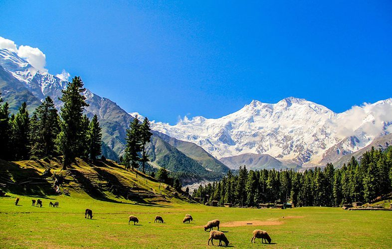
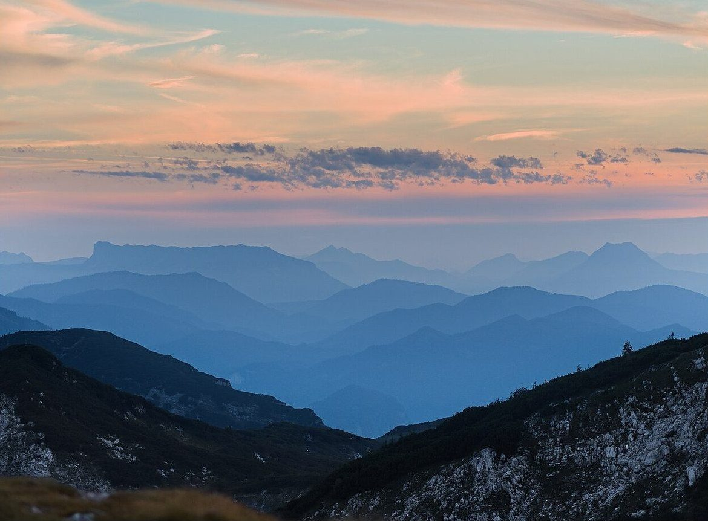

カフェ / 愛媛県西予市野村町
四国カルスト風の丘
制作側の連想
石の羊を、数える。
「カルスト」は石灰岩が地表に顔を出す地形の呼び名だと言われます。制作側はそこから、草の丘にぽつぽつと白い石が散らばる様子を思い浮かべ、「眠れない夜に羊を数える」ような、ゆっくり数える遊びを連想しました。そこでこのサイトは、5ページを「ひとつ目の石」「ふたつ目の石」と数えていく作りにしています。これは制作側の連想で、お店の理念・由来とは無関係です。
丘のイメージ
風が通る、草の丘。
写真は西予市・四国カルストの風景ではありません。イメージで選んだ、国外・撮影地不明のフリー素材です。



ご案内
お店のこと(確認できたものだけ)
| 所在地 | 〒797-1434 愛媛県西予市野村町大野ケ原260 |
|---|---|
| 電話 | なし |
| 営業時間 | 準備中 |
| 定休日 | 準備中 |
| ご予約 | 準備中 |
| 駐車場 | 準備中 |
| SNS | Instagram @kaze.no.oka_karst |